Kami melayani pemasangan kanopi, pekerjaan konstruksi baja ringan dan besi skala kecil, serta renovasi bangunan. Depok menjadi wilayah prioritas, dengan layanan ke Jakarta, Bogor, Tangerang, dan Bekasi sesuai kebutuhan proyek.
Kanopi minimalis dengan pilihan rangka baja ringan maupun besi hollow sesuai kebutuhan lokasi.
Kanopi untuk area parkir dengan pilihan rangka dan material atap sesuai kebutuhan.
Pilihan kanopi dengan atap solarflat 6 mm dan rangka baja ringan full double.
Pekerjaan kanopi dan balkon menggunakan rangka besi hollow sesuai desain serta kondisi lokasi.
Pilihan ekonomis menggunakan atap spandek polos dengan rangka baja ringan dan spesifikasi sederhana.
Kanopi dengan desain custom sesuai keinginan Anda.
Pekerjaan rangka baja ringan, besi hollow, dan profil WF skala kecil sesuai kebutuhan serta pemeriksaan teknis proyek.
Pekerjaan renovasi menyeluruh maupun sebagian, menyesuaikan kebutuhan dan lingkup proyek.
Pemasangan dinding, pekerjaan lantai, plafon, dan pekerjaan bangunan lain sesuai kemampuan serta kebutuhan pelanggan.
Harga berikut merupakan gambaran berdasarkan jenis material dan spesifikasi pekerjaan. Nilai akhir ditentukan setelah ukuran, desain, kondisi lokasi, volume pekerjaan, dan kebutuhan material diperiksa.
Rangka baja ringan dengan spesifikasi ekonomis.
Atap solarflat 6 mm dengan rangka baja ringan full double.
Harga bergantung desain dan detail pekerjaan besi hollow.
Harga bukan penawaran final. Konsultasikan ukuran dan spesifikasi proyek untuk mendapatkan perhitungan anggaran yang sesuai.
Seluruh wilayah DKI Jakarta
Kota & Kabupaten Bogor
Kota, Kabupaten & Tangsel
Kota & Kabupaten Bekasi
Dokumentasi hasil pekerjaan KBM Canopy, mulai dari kanopi carport, balkon, atap polycarbonate, Alderon, Solartuff, hingga detail konstruksi rangka baja ringan. Setiap proyek dikerjakan menyesuaikan kondisi dan kebutuhan bangunan.
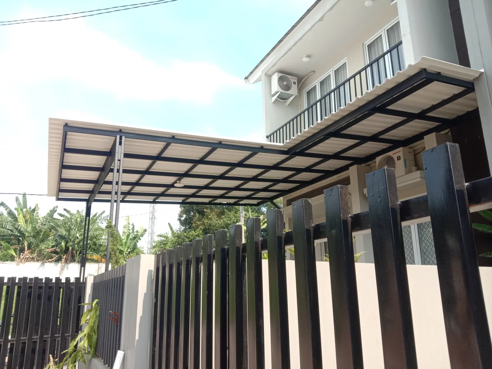
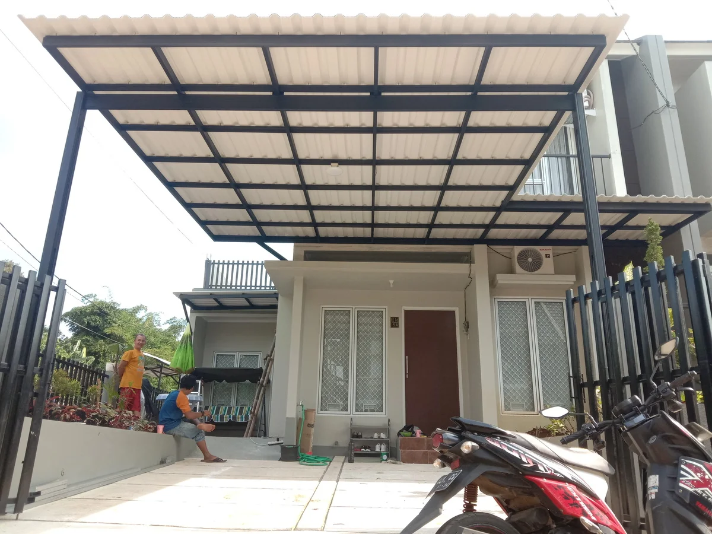
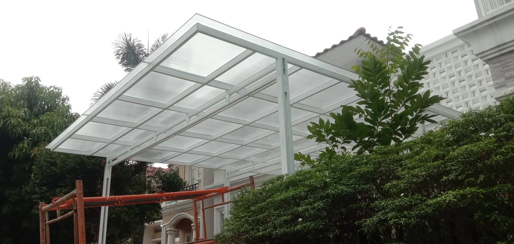
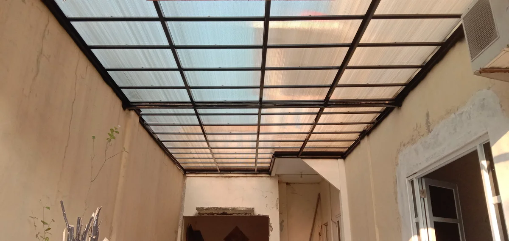
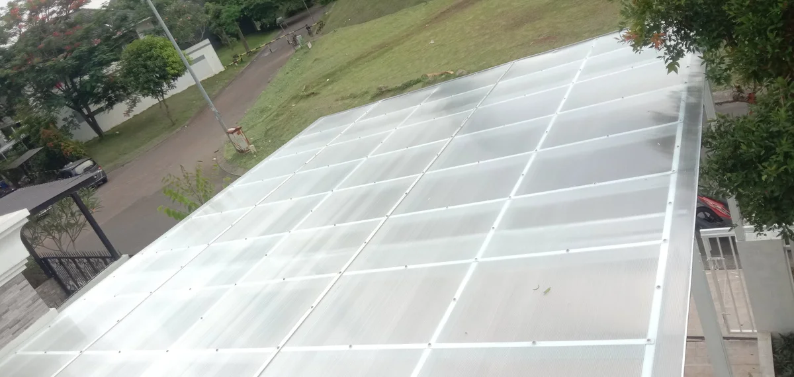
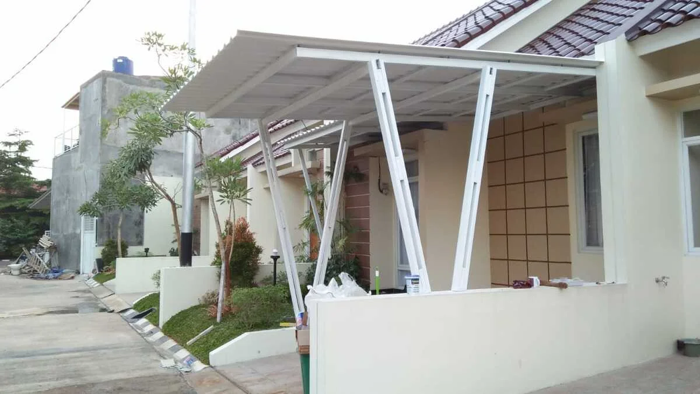
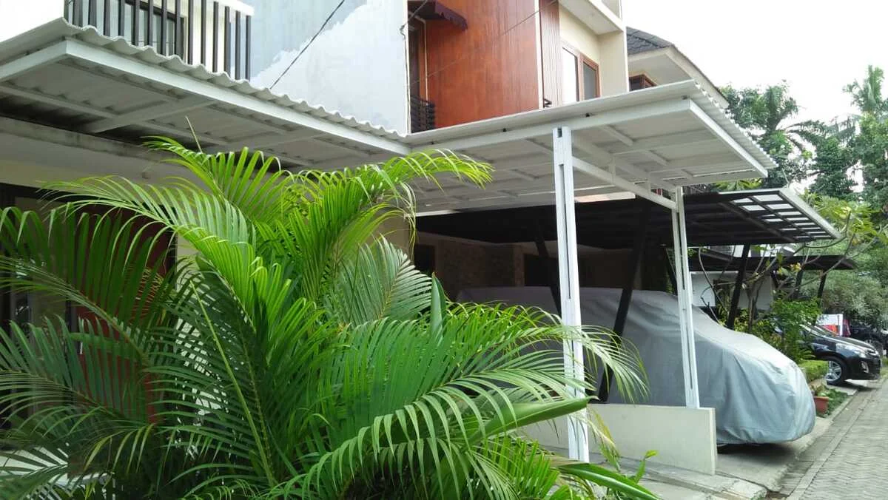
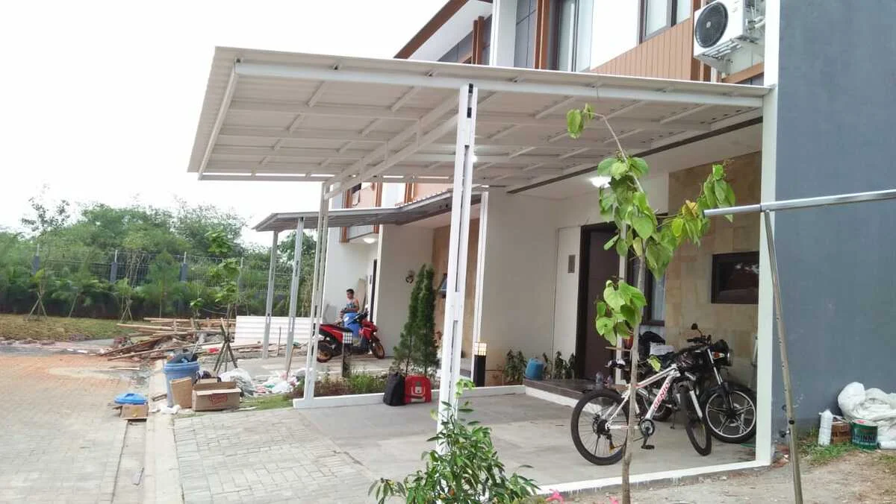
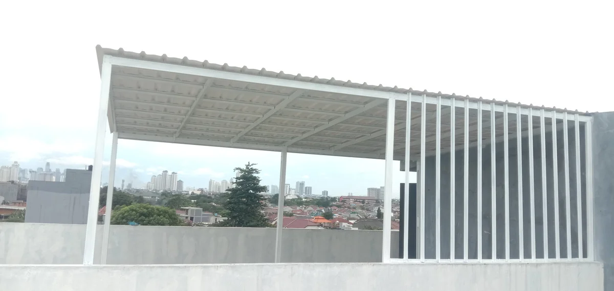
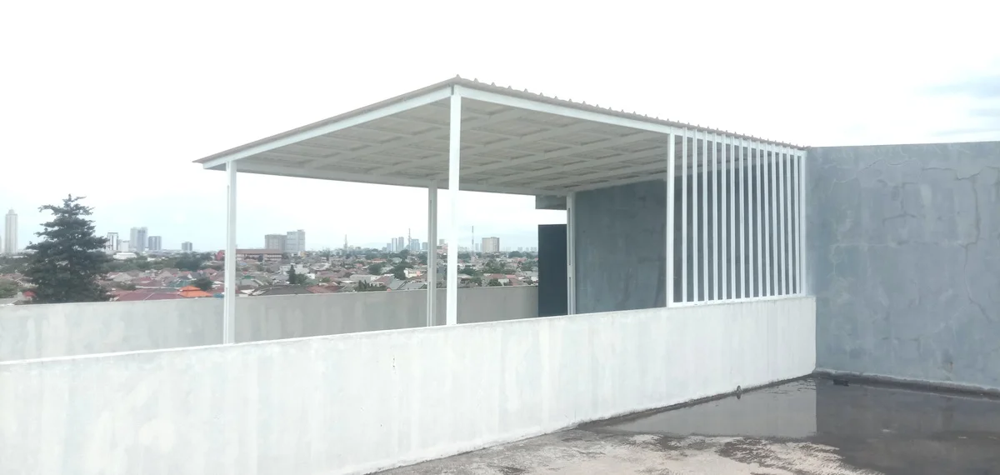
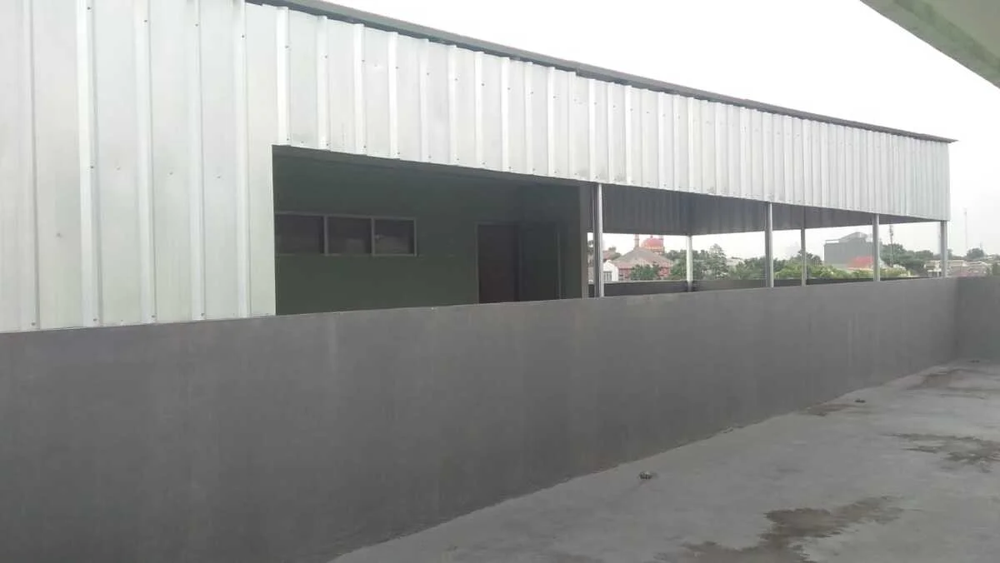
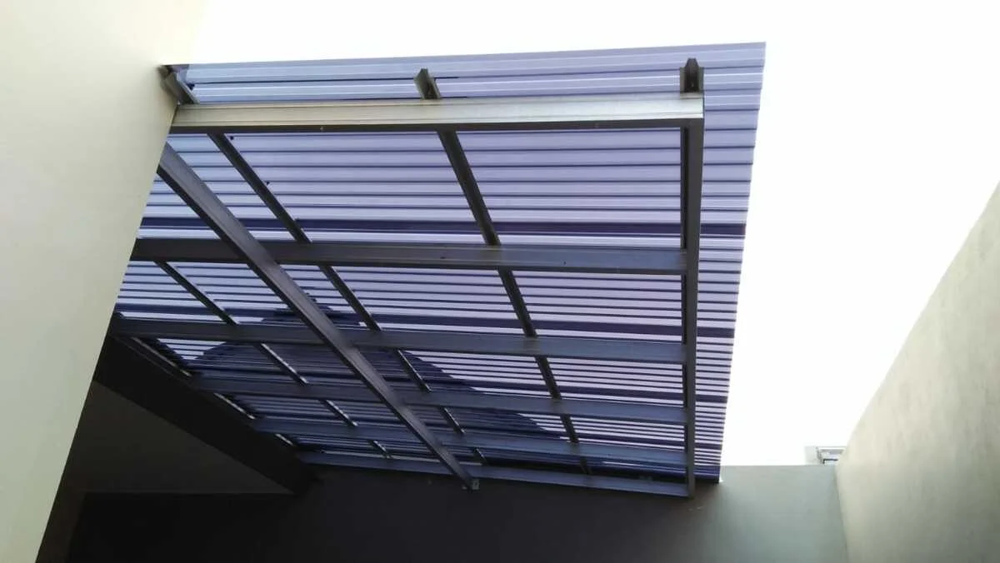
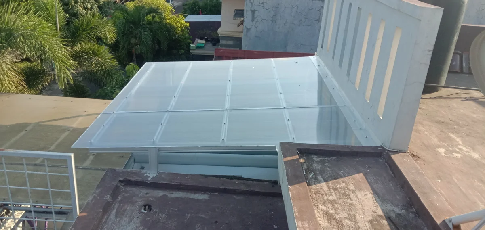
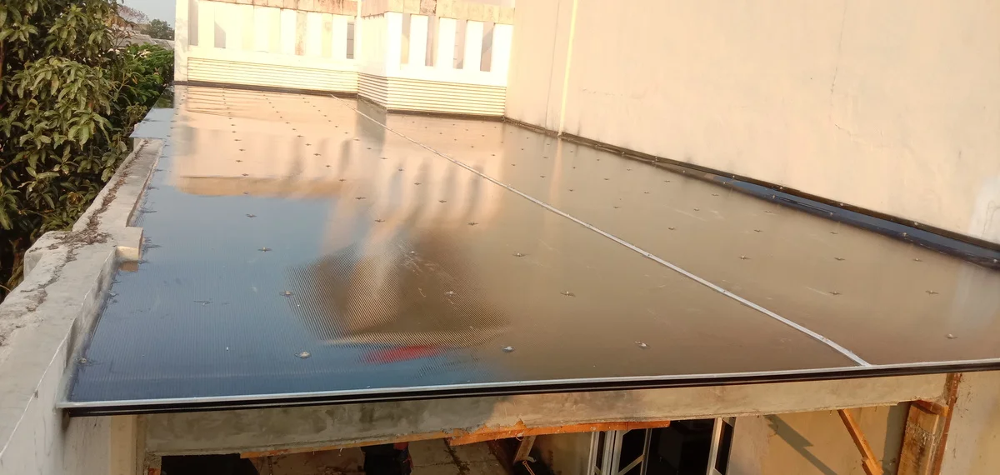
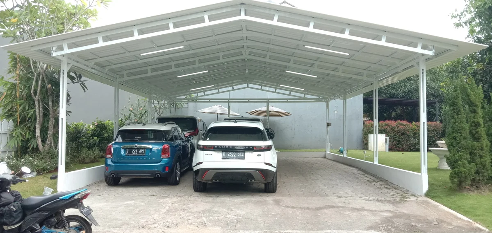
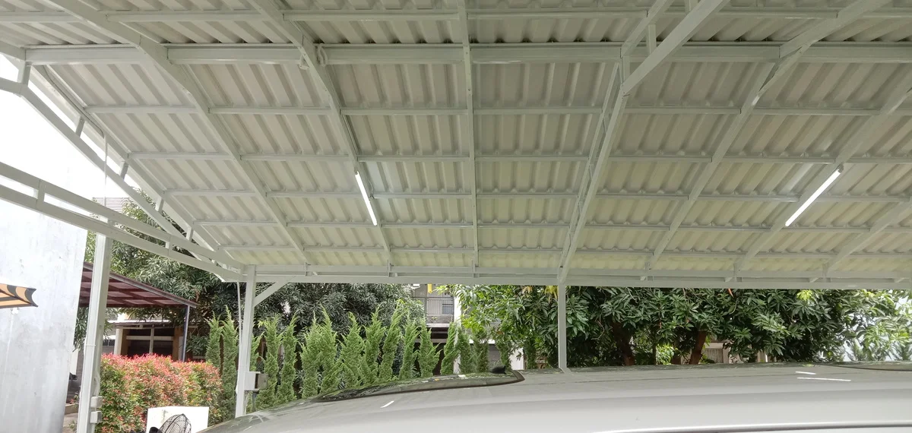
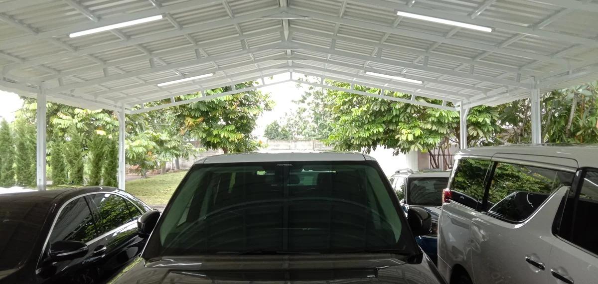
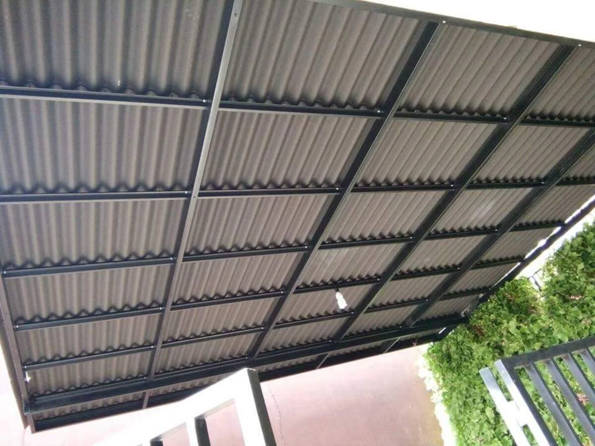
Hubungi kami via WhatsApp untuk konsultasi gratis.
Tim kami datang untuk pengukuran dan diskusi desain.
Kami berikan penawaran harga transparan.
Tim profesional memasang kanopi sesuai jadwal.
Harga mulai Rp 250.000 - Rp 850.000 per m², tergantung jenis atap dan spesifikasi rangka.
Ya, kami melayani Jakarta, Bogor, Depok, Tangerang, dan Bekasi. Hubungi kami untuk memastikan jangkauan survey di lokasi Anda.
Untuk kanopi baja ringan ukuran sekitar 15–20 m² termasuk pengecatan rangka, estimasi pengerjaan sekitar 3–4 hari kerja. Pekerjaan rangka besi hollow hingga selesai sekitar 7 hari kerja. Durasi dapat berubah mengikuti cuaca, ukuran, dan tingkat kesulitan medan.
Ketentuan garansi disesuaikan dengan jenis pekerjaan dan material yang digunakan. Silakan konsultasikan kebutuhan Anda.
Dapatkan konsultasi dan survey gratis sekarang!